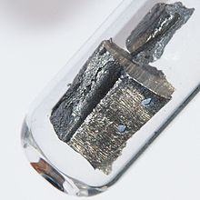

Neodymium
|  | |||||||||||||||||||||||||||||||||||||||||||||||||||||||||||||||||||||||||||||||||||||||||||||||||||||||||||||||||||||||||||||||||||||||||||||||||||||||||||||||||||||||||||||||||||||||||||||||||||||||||||||||||||||||||||||||||||||
| General properties | |||||||||||||||||||||||||||||||||||||||||||||||||||||||||||||||||||||||||||||||||||||||||||||||||||||||||||||||||||||||||||||||||||||||||||||||||||||||||||||||||||||||||||||||||||||||||||||||||||||||||||||||||||||||||||||||||||||
|---|---|---|---|---|---|---|---|---|---|---|---|---|---|---|---|---|---|---|---|---|---|---|---|---|---|---|---|---|---|---|---|---|---|---|---|---|---|---|---|---|---|---|---|---|---|---|---|---|---|---|---|---|---|---|---|---|---|---|---|---|---|---|---|---|---|---|---|---|---|---|---|---|---|---|---|---|---|---|---|---|---|---|---|---|---|---|---|---|---|---|---|---|---|---|---|---|---|---|---|---|---|---|---|---|---|---|---|---|---|---|---|---|---|---|---|---|---|---|---|---|---|---|---|---|---|---|---|---|---|---|---|---|---|---|---|---|---|---|---|---|---|---|---|---|---|---|---|---|---|---|---|---|---|---|---|---|---|---|---|---|---|---|---|---|---|---|---|---|---|---|---|---|---|---|---|---|---|---|---|---|---|---|---|---|---|---|---|---|---|---|---|---|---|---|---|---|---|---|---|---|---|---|---|---|---|---|---|---|---|---|---|---|---|---|---|---|---|---|---|---|---|---|---|---|---|---|---|---|---|
| Name, symbol | neodymium, Nd | ||||||||||||||||||||||||||||||||||||||||||||||||||||||||||||||||||||||||||||||||||||||||||||||||||||||||||||||||||||||||||||||||||||||||||||||||||||||||||||||||||||||||||||||||||||||||||||||||||||||||||||||||||||||||||||||||||||
| Pronunciation | /ˌniː.ɵˈdɪmiəm/ NEE-o-DIM-ee-əm |
||||||||||||||||||||||||||||||||||||||||||||||||||||||||||||||||||||||||||||||||||||||||||||||||||||||||||||||||||||||||||||||||||||||||||||||||||||||||||||||||||||||||||||||||||||||||||||||||||||||||||||||||||||||||||||||||||||
| Appearance | silvery white | ||||||||||||||||||||||||||||||||||||||||||||||||||||||||||||||||||||||||||||||||||||||||||||||||||||||||||||||||||||||||||||||||||||||||||||||||||||||||||||||||||||||||||||||||||||||||||||||||||||||||||||||||||||||||||||||||||||
| Neodymium in the periodic table | |||||||||||||||||||||||||||||||||||||||||||||||||||||||||||||||||||||||||||||||||||||||||||||||||||||||||||||||||||||||||||||||||||||||||||||||||||||||||||||||||||||||||||||||||||||||||||||||||||||||||||||||||||||||||||||||||||||
|
|||||||||||||||||||||||||||||||||||||||||||||||||||||||||||||||||||||||||||||||||||||||||||||||||||||||||||||||||||||||||||||||||||||||||||||||||||||||||||||||||||||||||||||||||||||||||||||||||||||||||||||||||||||||||||||||||||||
| Atomic number | 60 | ||||||||||||||||||||||||||||||||||||||||||||||||||||||||||||||||||||||||||||||||||||||||||||||||||||||||||||||||||||||||||||||||||||||||||||||||||||||||||||||||||||||||||||||||||||||||||||||||||||||||||||||||||||||||||||||||||||
| Standard atomic weight (±) | 144.242(3)[1] | ||||||||||||||||||||||||||||||||||||||||||||||||||||||||||||||||||||||||||||||||||||||||||||||||||||||||||||||||||||||||||||||||||||||||||||||||||||||||||||||||||||||||||||||||||||||||||||||||||||||||||||||||||||||||||||||||||||
| Element category | lanthanide | ||||||||||||||||||||||||||||||||||||||||||||||||||||||||||||||||||||||||||||||||||||||||||||||||||||||||||||||||||||||||||||||||||||||||||||||||||||||||||||||||||||||||||||||||||||||||||||||||||||||||||||||||||||||||||||||||||||
| Group, block | group n/a, f-block | ||||||||||||||||||||||||||||||||||||||||||||||||||||||||||||||||||||||||||||||||||||||||||||||||||||||||||||||||||||||||||||||||||||||||||||||||||||||||||||||||||||||||||||||||||||||||||||||||||||||||||||||||||||||||||||||||||||
| Period | period 6 | ||||||||||||||||||||||||||||||||||||||||||||||||||||||||||||||||||||||||||||||||||||||||||||||||||||||||||||||||||||||||||||||||||||||||||||||||||||||||||||||||||||||||||||||||||||||||||||||||||||||||||||||||||||||||||||||||||||
| Electron configuration | [Xe] 4f4 6s2 | ||||||||||||||||||||||||||||||||||||||||||||||||||||||||||||||||||||||||||||||||||||||||||||||||||||||||||||||||||||||||||||||||||||||||||||||||||||||||||||||||||||||||||||||||||||||||||||||||||||||||||||||||||||||||||||||||||||
| per shell | 2, 8, 18, 22, 8, 2 | ||||||||||||||||||||||||||||||||||||||||||||||||||||||||||||||||||||||||||||||||||||||||||||||||||||||||||||||||||||||||||||||||||||||||||||||||||||||||||||||||||||||||||||||||||||||||||||||||||||||||||||||||||||||||||||||||||||
| Physical properties | |||||||||||||||||||||||||||||||||||||||||||||||||||||||||||||||||||||||||||||||||||||||||||||||||||||||||||||||||||||||||||||||||||||||||||||||||||||||||||||||||||||||||||||||||||||||||||||||||||||||||||||||||||||||||||||||||||||
| Phase | solid | ||||||||||||||||||||||||||||||||||||||||||||||||||||||||||||||||||||||||||||||||||||||||||||||||||||||||||||||||||||||||||||||||||||||||||||||||||||||||||||||||||||||||||||||||||||||||||||||||||||||||||||||||||||||||||||||||||||
| Melting point | 1297 K (1024 °C, 1875 °F) | ||||||||||||||||||||||||||||||||||||||||||||||||||||||||||||||||||||||||||||||||||||||||||||||||||||||||||||||||||||||||||||||||||||||||||||||||||||||||||||||||||||||||||||||||||||||||||||||||||||||||||||||||||||||||||||||||||||
| Boiling point | 3347 K (3074 °C, 5565 °F) | ||||||||||||||||||||||||||||||||||||||||||||||||||||||||||||||||||||||||||||||||||||||||||||||||||||||||||||||||||||||||||||||||||||||||||||||||||||||||||||||||||||||||||||||||||||||||||||||||||||||||||||||||||||||||||||||||||||
| Density near r.t. | 7.01 g·cm−3 | ||||||||||||||||||||||||||||||||||||||||||||||||||||||||||||||||||||||||||||||||||||||||||||||||||||||||||||||||||||||||||||||||||||||||||||||||||||||||||||||||||||||||||||||||||||||||||||||||||||||||||||||||||||||||||||||||||||
| when liquid, at m.p. | 6.89 g·cm−3 | ||||||||||||||||||||||||||||||||||||||||||||||||||||||||||||||||||||||||||||||||||||||||||||||||||||||||||||||||||||||||||||||||||||||||||||||||||||||||||||||||||||||||||||||||||||||||||||||||||||||||||||||||||||||||||||||||||||
| Heat of fusion | 7.14 kJ·mol−1 | ||||||||||||||||||||||||||||||||||||||||||||||||||||||||||||||||||||||||||||||||||||||||||||||||||||||||||||||||||||||||||||||||||||||||||||||||||||||||||||||||||||||||||||||||||||||||||||||||||||||||||||||||||||||||||||||||||||
| Heat of vaporization | 289 kJ·mol−1 | ||||||||||||||||||||||||||||||||||||||||||||||||||||||||||||||||||||||||||||||||||||||||||||||||||||||||||||||||||||||||||||||||||||||||||||||||||||||||||||||||||||||||||||||||||||||||||||||||||||||||||||||||||||||||||||||||||||
| Molar heat capacity | 27.45 J·mol−1·K−1 | ||||||||||||||||||||||||||||||||||||||||||||||||||||||||||||||||||||||||||||||||||||||||||||||||||||||||||||||||||||||||||||||||||||||||||||||||||||||||||||||||||||||||||||||||||||||||||||||||||||||||||||||||||||||||||||||||||||
vapor pressure
|
|||||||||||||||||||||||||||||||||||||||||||||||||||||||||||||||||||||||||||||||||||||||||||||||||||||||||||||||||||||||||||||||||||||||||||||||||||||||||||||||||||||||||||||||||||||||||||||||||||||||||||||||||||||||||||||||||||||
| Atomic properties | |||||||||||||||||||||||||||||||||||||||||||||||||||||||||||||||||||||||||||||||||||||||||||||||||||||||||||||||||||||||||||||||||||||||||||||||||||||||||||||||||||||||||||||||||||||||||||||||||||||||||||||||||||||||||||||||||||||
| Oxidation states | +4, +3, +2 (a mildly basic oxide) | ||||||||||||||||||||||||||||||||||||||||||||||||||||||||||||||||||||||||||||||||||||||||||||||||||||||||||||||||||||||||||||||||||||||||||||||||||||||||||||||||||||||||||||||||||||||||||||||||||||||||||||||||||||||||||||||||||||
| Electronegativity | Pauling scale: 1.14 | ||||||||||||||||||||||||||||||||||||||||||||||||||||||||||||||||||||||||||||||||||||||||||||||||||||||||||||||||||||||||||||||||||||||||||||||||||||||||||||||||||||||||||||||||||||||||||||||||||||||||||||||||||||||||||||||||||||
| Ionization energies | 1st: 533.1 kJ·mol−1 2nd: 1040 kJ·mol−1 3rd: 2130 kJ·mol−1 |
||||||||||||||||||||||||||||||||||||||||||||||||||||||||||||||||||||||||||||||||||||||||||||||||||||||||||||||||||||||||||||||||||||||||||||||||||||||||||||||||||||||||||||||||||||||||||||||||||||||||||||||||||||||||||||||||||||
| Atomic radius | empirical: 181 pm | ||||||||||||||||||||||||||||||||||||||||||||||||||||||||||||||||||||||||||||||||||||||||||||||||||||||||||||||||||||||||||||||||||||||||||||||||||||||||||||||||||||||||||||||||||||||||||||||||||||||||||||||||||||||||||||||||||||
| Covalent radius | 201±6 pm | ||||||||||||||||||||||||||||||||||||||||||||||||||||||||||||||||||||||||||||||||||||||||||||||||||||||||||||||||||||||||||||||||||||||||||||||||||||||||||||||||||||||||||||||||||||||||||||||||||||||||||||||||||||||||||||||||||||
| Miscellanea | |||||||||||||||||||||||||||||||||||||||||||||||||||||||||||||||||||||||||||||||||||||||||||||||||||||||||||||||||||||||||||||||||||||||||||||||||||||||||||||||||||||||||||||||||||||||||||||||||||||||||||||||||||||||||||||||||||||
| Crystal structure | double hexagonal close-packed (dhcp)
 |
||||||||||||||||||||||||||||||||||||||||||||||||||||||||||||||||||||||||||||||||||||||||||||||||||||||||||||||||||||||||||||||||||||||||||||||||||||||||||||||||||||||||||||||||||||||||||||||||||||||||||||||||||||||||||||||||||||
| Speed of sound thin rod | 2330 m·s−1 (at 20 °C) | ||||||||||||||||||||||||||||||||||||||||||||||||||||||||||||||||||||||||||||||||||||||||||||||||||||||||||||||||||||||||||||||||||||||||||||||||||||||||||||||||||||||||||||||||||||||||||||||||||||||||||||||||||||||||||||||||||||
| Thermal expansion | α, poly: 9.6 µm·m−1·K−1 (at r.t.) | ||||||||||||||||||||||||||||||||||||||||||||||||||||||||||||||||||||||||||||||||||||||||||||||||||||||||||||||||||||||||||||||||||||||||||||||||||||||||||||||||||||||||||||||||||||||||||||||||||||||||||||||||||||||||||||||||||||
| Thermal conductivity | 16.5 W·m−1·K−1 | ||||||||||||||||||||||||||||||||||||||||||||||||||||||||||||||||||||||||||||||||||||||||||||||||||||||||||||||||||||||||||||||||||||||||||||||||||||||||||||||||||||||||||||||||||||||||||||||||||||||||||||||||||||||||||||||||||||
| Electrical resistivity | α, poly: 643 nΩ·m | ||||||||||||||||||||||||||||||||||||||||||||||||||||||||||||||||||||||||||||||||||||||||||||||||||||||||||||||||||||||||||||||||||||||||||||||||||||||||||||||||||||||||||||||||||||||||||||||||||||||||||||||||||||||||||||||||||||
| Magnetic ordering | paramagnetic, antiferromagnetic below 20 K[2] | ||||||||||||||||||||||||||||||||||||||||||||||||||||||||||||||||||||||||||||||||||||||||||||||||||||||||||||||||||||||||||||||||||||||||||||||||||||||||||||||||||||||||||||||||||||||||||||||||||||||||||||||||||||||||||||||||||||
| Young's modulus | α form: 41.4 GPa | ||||||||||||||||||||||||||||||||||||||||||||||||||||||||||||||||||||||||||||||||||||||||||||||||||||||||||||||||||||||||||||||||||||||||||||||||||||||||||||||||||||||||||||||||||||||||||||||||||||||||||||||||||||||||||||||||||||
| Shear modulus | α form: 16.3 GPa | ||||||||||||||||||||||||||||||||||||||||||||||||||||||||||||||||||||||||||||||||||||||||||||||||||||||||||||||||||||||||||||||||||||||||||||||||||||||||||||||||||||||||||||||||||||||||||||||||||||||||||||||||||||||||||||||||||||
| Bulk modulus | α form: 31.8 GPa | ||||||||||||||||||||||||||||||||||||||||||||||||||||||||||||||||||||||||||||||||||||||||||||||||||||||||||||||||||||||||||||||||||||||||||||||||||||||||||||||||||||||||||||||||||||||||||||||||||||||||||||||||||||||||||||||||||||
| Poisson ratio | α form: 0.281 | ||||||||||||||||||||||||||||||||||||||||||||||||||||||||||||||||||||||||||||||||||||||||||||||||||||||||||||||||||||||||||||||||||||||||||||||||||||||||||||||||||||||||||||||||||||||||||||||||||||||||||||||||||||||||||||||||||||
| Vickers hardness | 345–745 MPa | ||||||||||||||||||||||||||||||||||||||||||||||||||||||||||||||||||||||||||||||||||||||||||||||||||||||||||||||||||||||||||||||||||||||||||||||||||||||||||||||||||||||||||||||||||||||||||||||||||||||||||||||||||||||||||||||||||||
| Brinell hardness | 265–700 MPa | ||||||||||||||||||||||||||||||||||||||||||||||||||||||||||||||||||||||||||||||||||||||||||||||||||||||||||||||||||||||||||||||||||||||||||||||||||||||||||||||||||||||||||||||||||||||||||||||||||||||||||||||||||||||||||||||||||||
| CAS Registry Number | 7440-00-8 | ||||||||||||||||||||||||||||||||||||||||||||||||||||||||||||||||||||||||||||||||||||||||||||||||||||||||||||||||||||||||||||||||||||||||||||||||||||||||||||||||||||||||||||||||||||||||||||||||||||||||||||||||||||||||||||||||||||
| History | |||||||||||||||||||||||||||||||||||||||||||||||||||||||||||||||||||||||||||||||||||||||||||||||||||||||||||||||||||||||||||||||||||||||||||||||||||||||||||||||||||||||||||||||||||||||||||||||||||||||||||||||||||||||||||||||||||||
| Discovery | Carl Auer von Welsbach (1885) | ||||||||||||||||||||||||||||||||||||||||||||||||||||||||||||||||||||||||||||||||||||||||||||||||||||||||||||||||||||||||||||||||||||||||||||||||||||||||||||||||||||||||||||||||||||||||||||||||||||||||||||||||||||||||||||||||||||
| Most stable isotopes | |||||||||||||||||||||||||||||||||||||||||||||||||||||||||||||||||||||||||||||||||||||||||||||||||||||||||||||||||||||||||||||||||||||||||||||||||||||||||||||||||||||||||||||||||||||||||||||||||||||||||||||||||||||||||||||||||||||
|
|||||||||||||||||||||||||||||||||||||||||||||||||||||||||||||||||||||||||||||||||||||||||||||||||||||||||||||||||||||||||||||||||||||||||||||||||||||||||||||||||||||||||||||||||||||||||||||||||||||||||||||||||||||||||||||||||||||
| Decay modes in parentheses are predicted, but have not yet been observed | |||||||||||||||||||||||||||||||||||||||||||||||||||||||||||||||||||||||||||||||||||||||||||||||||||||||||||||||||||||||||||||||||||||||||||||||||||||||||||||||||||||||||||||||||||||||||||||||||||||||||||||||||||||||||||||||||||||
{kind=link}
Neodymium is a chemical element with symbol Nd and atomic number 60. It is a soft silvery metal that tarnishes in air. Neodymium was discovered in 1885 by the Austrian chemist Carl Auer von Welsbach. It is present in significant quantities in the ore minerals monazite and bastnäsite. Neodymium is not found naturally in metallic form or unmixed with other lanthanides, and it is usually refined for general use. Although neodymium is classed as a "rare earth", it is a fairly common element, no rarer than cobalt, nickel, and copper, and is widely distributed in the Earth's crust.[3] Most of the world's neodymium is mined in China.
Neodymium compounds were first commercially used as glass dyes in 1927, and they remain a popular additive in glasses. The color of neodymium compounds—due to the Nd3+ ion—is often a reddish-purple but it changes with the type of lighting, due to the interaction of the sharp light absorption bands of neodymium with ambient light enriched with the sharp visible emission bands of mercury, trivalent europium or terbium. Some neodymium-doped glasses are also used in lasers that emit infrared with wavelengths between 1047 and 1062 nanometers. These have been used in extremely-high-power applications, such as experiments in inertial confinement fusion.
Neodymium is also used with various other substrate crystals, such as yttrium aluminum garnet in the Nd:YAG laser. This laser usually emits infrared at a wavelength of about 1064 nanometers. The Nd:YAG laser is one of the most commonly used solid-state lasers.
Another important use of neodymium is as a component in the alloys used to make high-strength neodymium magnets—powerful permanent magnets.[4] These magnets are widely used in such products as microphones, professional loudspeakers, in-ear headphones, and computer hard disks, where low magnet mass (or volume) or strong magnetic fields are required. Larger neodymium magnets are used in high-power-versus-weight electric motors (for example in hybrid cars) and generators (for example aircraft and wind turbine electric generators).[5]
Contents
[hide]Characteristics[edit]
Physical properties[edit]
Neodymium, a rare earth metal, was present in the classical mischmetal at a concentration of about 18%. Metallic neodymium has a bright, silvery metallic luster, but as one of the more reactive lanthanide rare-earth metals, it quickly oxidizes in ordinary air. The oxide layer that forms then peels off, and this exposes the metal to further oxidation. Thus, a centimeter-sized sample of neodymium completely oxidizes within a year.[6]
Neodymium commonly exists in two allotropic forms, with a transformation from a double hexagonal to a body-centered cubic structure taking place at about 863 °C.[7]
Chemical properties[edit]
Neodymium metal tarnishes slowly in air and it burns readily at about 150 °C to form neodymium(III) oxide:
- 4 Nd + 3 O2 → 2 Nd2O3
Neodymium is a quite electropositive element, and it reacts slowly with cold water, but quite quickly with hot water to form neodymium(III) hydroxide:
- 2 Nd (s) + 6 H2O (l) → 2 Nd(OH)3 (aq) + 3 H2 (g)
Neodymium metal reacts vigorously with all the halogens:
- 2 Nd (s) + 3 F2 (g) → 2 NdF3 (s) [a violet substance]
- 2 Nd (s) + 3 Cl2 (g) → 2 NdCl3 (s) [a mauve substance]
- 2 Nd (s) + 3 Br2 (g) → 2 NdBr3 (s) [a violet substance]
- 2 Nd (s) + 3 I2 (g) → 2 NdI3 (s) [a green substance]
Neodymium dissolves readily in dilute sulfuric acid to form solutions that contain the lilac Nd(III) ion. These exist as a [Nd(OH2)9]3+ complexes:[8]
- 2 Nd (s) + 3 H2SO4 (aq) → 2 Nd3+ (aq) + 3 SO2−
4 (aq) + 3 H2 (g)
Compounds[edit]
Neodymium compounds include
- halides: neodymium(III) fluoride (NdF3); neodymium(III) chloride (NdCl3); neodymium(III) bromide (NdBr3); neodymium(III) iodide (NdI3)
- oxides: neodymium(III) oxide (Nd2O3)
- sulfides: neodymium(II) sulfide (NdS), neodymium(III) sulfide (Nd2S3)
- nitrides: neodymium(III) nitride (NdN)
- hydroxide: neodymium(III) hydroxide (Nd(OH)3)
- phosphide: neodymium phosphide (NdP)
- carbide: neodymium carbide (NdC2)
- nitrate: neodymium(III) nitrate (Nd(NO3)3)
- sulfate: neodymium(III) sulfate (Nd2(SO4)3)
{kind=link}
Some neodymium compounds have colors which vary based upon the type of lighting.
-
Neodymium compounds in fluorescent tube light—from left to right, the sulfate, nitrate, and chloride
-
Neodymium compounds in normal daylight
{kind=link}
{kind=link}
{kind=link}
Isotopes[edit]
Naturally occurring neodymium is a mixture of five stable isotopes, 142Nd, 143Nd, 145Nd, 146Nd and 148Nd, with 142Nd being the most abundant (27.2% of the natural abundance), and two radioisotopes, 144Nd and 150Nd. In all, 31 radioisotopes of neodymium have been detected as of 2010[update], with the most stable radioisotopes being the naturally occurring ones: 144Nd (alpha decay with a half-life (t1/2) of 2.29×1015 years) and 150Nd (double beta decay, t1/2 = 7×1018 years, approximately). All of the remaining radioactive isotopes have half-lives that are shorter than eleven days, and the majority of these have half-lives that are shorter than 70 seconds. Neodymium also has 13 known meta states, with the most stable one being 139mNd (t1/2 = 5.5 hours), 135mNd (t1/2 = 5.5 minutes) and 133m1Nd (t1/2 ~70 seconds).
The primary decay modes before the most abundant stable isotope, 142Nd, are electron capture and positron decay, and the primary mode after is beta minus decay. The primary decay products before 142Nd are element Pr (praseodymium) isotopes and the primary products after are element Pm (promethium) isotopes.
History[edit]
{kind=link}
Neodymium was discovered by Baron Carl Auer von Welsbach, an Austrian chemist, in Vienna in 1885. He separated neodymium, as well as the element praseodymium, from a material known as didymium by means of fractional crystallization of the double ammonium nitrate tetrahydrates from nitric acid, while following the separation by spectroscopic analysis; however, it was not isolated in relatively pure form until 1925. The name neodymium is derived from the Greek words neos (νέος), new, and didymos (διδύμος), twin.[9]
Double nitrate crystallization was the means of commercial neodymium purification until the 1950s. Lindsay Chemical Division was the first to commercialize large-scale ion-exchange purification of neodymium. Starting in the 1950s, high purity (above 99%) neodymium was primarily obtained through an ion exchange process from monazite, a mineral rich in rare earth elements. The metal itself is obtained through electrolysis of its halide salts. Currently, most neodymium is extracted from bastnäsite, (Ce,La,Nd,Pr)CO3F, and purified by solvent extraction. Ion-exchange purification is reserved for preparing the highest purities (typically >99.99%). The evolving technology, and improved purity of commercially available neodymium oxide, was reflected in the appearance of neodymium glass that resides in collections today. Early neodymium glasses made in the 1930s have a more reddish or orange tinge than modern versions which are more cleanly purple, due to the difficulties in removing the last traces of praseodymium in the era when manufacturing relied upon fractional crystallization technology.
Occurrence and production[edit]
{kind=link}
Neodymium is never found in nature as the free element, but rather it occurs in ores such as monazite and bastnäsite that contain small amounts of all the rare earth metals. The main mining areas are in China, the United States, Brazil, India, Sri Lanka, and Australia. The reserves of neodymium are estimated at about eight million tonnes. Although it belongs to the rare earth metals, neodymium is not rare at all. Its abundance in the Earth crust is about 38 mg/kg, which is the second highest among rare-earth elements, following cerium. The world's production of neodymium was about 7,000 tonnes in 2004.[9] The bulk of current production is from China, whose government has recently imposed strategic materials controls on the element, raising some concerns in consuming countries and causing skyrocketing prices of neodymium and other rare-earth metals.[10] As of late 2011, 99% pure neodymium was traded in world markets for US$300–350 per kilogram, down from the mid-2011 peak of $500/kg.[11]
Neodymium is typically 10–18% of the rare earth content of commercial deposits of the light rare earth element minerals bastnasite and monazite.[citation needed] With neodymium compounds being the most strongly colored for the trivalent lanthanides, that percentage of neodymium can occasionally dominate the coloration of rare earth minerals—when competing chromophores are absent. It usually gives a pink coloration. Outstanding examples of this include monazite crystals from the tin deposits in Llallagua, Bolivia; ancylite from Mont Saint-Hilaire, Quebec, Canada; or lanthanite from the Saucon Valley, Pennsylvania, US. As with neodymium glasses, such minerals change their colors under the differing lighting conditions. The absorption bands of neodymium interact with the visible emission spectrum of mercury vapor, with the unfiltered shortwave UV light causing neodymium-containing minerals to reflect a distinctive green color. This can be observed with monazite-containing sands or bastnasite-containing ore.
Applications[edit]
- Neodymium has an unusually large specific heat capacity at liquid-helium temperatures, so is useful in cryocoolers.
- Probably because of similarities to Ca2+, Nd3+ has been reported[12] to promote plant growth. Rare earth element compounds are frequently used in China as fertilizer.
- Samarium-neodymium dating is useful for determining the age relationships of rocks[13] and meteorites.
- Size and strength of volcanic eruption can be predicted by scanning for neodymium isotopes. Small and large volcanic eruptions produce lava with different neodymium isotope composition. From the composition of isotopes, scientists predict how big the coming eruption will be, and use this information to warn residents of the intensity of the eruption.
Magnets[edit]
{kind=link}
Neodymium magnets (actually an alloy, Nd2Fe14B) are the strongest permanent magnets known. A neodymium magnet of a few grams can lift a thousand times its own weight. These magnets are cheaper, lighter, and stronger than samarium-cobalt magnets. However, they are not superior in every aspect, as neodymium-based magnets lose their magnetism at high temperatures and tend to rust, while samarium-cobalt magnets do not.
Neodymium magnets appear in products such as microphones, professional loudspeakers, in-ear headphones, guitar and bass guitar pick-ups, and computer hard disks where low mass, small volume, or strong magnetic fields are required. Neodymium magnet electric motors have also been responsible for the development of purely electrical model aircraft within the first decade of the 21st century, to the point that these are displacing internal combustion–powered models internationally. Likewise, due to this high magnetic capacity per weight, neodymium is used in the electric motors of hybrid and electric automobiles, and in the electricity generators of some designs of commercial wind turbines (only wind turbines with "permanent magnet" generators use neodymium). For example, drive electric motors of each Toyota Prius require one kilogram (2.2 pounds) of neodymium per vehicle.[5]
Neodymium doped lasers[edit]
{kind=link}
{kind=link}
{kind=link}
Certain transparent materials with a small concentration of neodymium ions can be used in lasers as gain media for infrared wavelengths (1054–1064 nm), e.g. Nd:YAG (yttrium aluminium garnet), Nd:YLF (yttrium lithium fluoride), Nd:YVO4 (yttrium orthovanadate), and Nd:glass. Neodymium-doped crystals (typically Nd:YVO4) generate high-powered infrared laser beams which are converted to green laser light in commercial DPSS hand-held lasers and laser pointers.
The current laser at the UK Atomic Weapons Establishment (AWE), the HELEN (High Energy Laser Embodying Neodymium) 1-terawatt neodymium-glass laser, can access the midpoints of pressure and temperature regions and is used to acquire data for modeling on how density, temperature, and pressure interact inside warheads. HELEN can create plasmas of around 106 K, from which opacity and transmission of radiation are measured.[14]
Neodymium glass solid-state lasers are used in extremely high power (terawatt scale), high energy (megajoules) multiple beam systems for inertial confinement fusion. Nd:glass lasers are usually frequency tripled to the third harmonic at 351 nm in laser fusion devices.
Neodymium glass for other applications[edit]

{kind=link}
Neodymium glass (Nd:glass) is produced by the inclusion of neodymium oxide (Nd2O3) in the glass melt. Usually in daylight or incandescent light neodymium glass appears lavender, but it appears pale blue under fluorescent lighting. Neodymium may be used to color glass in delicate shades ranging from pure violet through wine-red and warm gray.
The first commercial use of purified neodymium was in glass coloration, starting with experiments by Leo Moser in November 1927. The resulting "Alexandrite" glass remains a signature color of the Moser glassworks to this day. Neodymium glass was widely emulated in the early 1930s by American glasshouses, most notably Heisey, Fostoria ("wisteria"), Cambridge ("heatherbloom"), and Steuben ("wisteria"), and elsewhere (e.g. Lalique, in France, or Murano). Tiffin's "twilight" remained in production from about 1950 to 1980.[15] Current sources include glassmakers in the Czech Republic, the United States, and China.
The sharp absorption bands of neodymium cause the glass color to change under different lighting conditions, being reddish-purple under daylight or yellow incandescent light, but blue under white fluorescent lighting, or greenish under trichromatic lighting. This color-change phenomenon is highly prized by collectors. In combination with gold or selenium, beautiful red colors result. Since neodymium coloration depends upon "forbidden" f-f transitions deep within the atom, there is relatively little influence on the color from the chemical environment, so the color is impervious to the thermal history of the glass. However, for the best color, iron-containing impurities need to be minimized in the silica used to make the glass. The same forbidden nature of the f-f transitions makes rare-earth colorants less intense than those provided by most d-transition elements, so more has to be used in a glass to achieve the desired color intensity. The original Moser recipe used about 5% of neodymium oxide in the glass melt, a sufficient quantity such that Moser referred to these as being "rare earth doped" glasses. Being a strong base, that level of neodymium would have affected the melting properties of the glass, and the lime content of the glass might have had to be adjusted accordingly.[16]
Light transmitted through neodymium glasses shows unusually sharp absorption bands; the glass is used in astronomical work to produce sharp bands by which spectral lines may be calibrated. Neodymium is also used to remove the green color caused by iron contaminants from glass. Neodymium is a component of "didymium" (referring to mixture of salts of neodymium and praseodymium) used for coloring glass to make welder's and glass-blower's goggles; the sharp absorption bands obliterate the strong sodium emission at 589 nm. The similar absorption of the yellow mercury emission line at 578 nm is the principal cause of the blue color observed for neodymium glass under traditional white-fluorescent lighting.
Neodymium and didymium glass are used in color-enhancing filters in indoor photography, particularly in filtering out the yellow hues from incandescent lighting.
Similarly, neodymium glass is becoming widely used more directly in incandescent light bulbs. These lamps contain neodymium in the glass to filter out yellow light, resulting in a whiter light which is more like sunlight.[17]
Neodymium has been patented for use in automobile rear-view mirrors, to reduce the glare at night.
Similar to its use in glasses, neodymium salts are used as a colorant for enamels.
Precautions[edit]
Neodymium metal dust is a combustion and explosion hazard. Neodymium compounds, as with all rare earth metals, are of low to moderate toxicity; however, its toxicity has not been thoroughly investigated. Neodymium dust and salts are very irritating to the eyes and mucous membranes, and moderately irritating to skin. Breathing the dust can cause lung embolisms, and accumulated exposure damages the liver. Neodymium also acts as an anticoagulant, especially when given intravenously.[9]
Neodymium magnets have been tested for medical uses such as magnetic braces and bone repair, but biocompatibility issues have prevented widespread application. Commercially available magnets made from neodymium are exceptionally strong, and can attract each other from large distances. If not handled carefully, they come together very quickly and forcefully, causing injuries. For example, there is at least one documented case of a person losing a fingertip when two magnets he was using snapped together from 50 cm away.[18]
Another risk of these powerful magnets is that if more than one magnet is ingested, they can pinch soft tissues in the gastrointestinal tract. This has led to at least 1,700 emergency room visits and necessitated the recall of the Buckyballs line of toys, which were construction sets of small neodymium magnets.[19][20]
References[edit]
- Jump up ^ Standard Atomic Weights 2013. Commission on Isotopic Abundances and Atomic Weights
- Jump up ^ Gschneidner, K. A.; Eyring, L. (1978). Handbook on the Physics and Chemistry of Rare Earths. Amsterdam: North Holland. ISBN 0444850228.
- Jump up ^ See Abundances of the elements (data page)
- Jump up ^ Toshiba Develops Dysprosium-free Samarium-Cobalt Magnet to Replace Heat-resistant Neodymium Magnet in Essential Applications. Toshiba (2012-08-16). Retrieved on 2012-09-24.
- ^ Jump up to: a b As hybrid cars gobble rare metals, shortage looms, Reuters, August 31, 2009.
- Jump up ^ "Rare-Earth Metal Long Term Air Exposure Test". Retrieved 2009-08-08.
- Jump up ^ C. R. Hammond (2000). The Elements, in Handbook of Chemistry and Physics (81st ed.). CRC press. ISBN 0-8493-0481-4.
- Jump up ^ "Chemical reactions of Neodymium". Webelements. Retrieved 2012-08-16.
- ^ Jump up to: a b c John Emsley (2003). Nature's building blocks: an A–Z guide to the elements. Oxford University Press. pp. 268–270. ISBN 0-19-850340-7.
- Jump up ^ Milmo, Cahal (2010-01-02). Concern as China clamps down on rare earth exports, The Independent
- Jump up ^ "Prices of Rare Earth Metals Declining Sharply". The New York Times. November 17, 2011.
- Jump up ^ Y. Wei et al. "The Effect of Neodymium (Nd3+) on Some Physiological Activities in Oilseed Rape during Calcium (Ca2+) Starvation" 10th International Rapeseed Congress
- Jump up ^ "Team finds Earth's 'oldest rocks'". London: BBC news. 2008-09-26. Retrieved 2009-06-06.
- Jump up ^ Norman, M.J.; Andrew, J.E.; Bett, T.H.; Clifford, R.K. et al. (2002). "Multipass Reconfiguration of the HELEN Nd:Glass Laser at the Atomic Weapons Establishment". Applied Optics 41 (18): 3497–505. Bibcode:2002ApOpt..41.3497N. doi:10.1364/AO.41.003497. PMID 12078672.
- Jump up ^ "Chameleon Glass Changes Color". Archived from the original on 2008-04-03. Retrieved 2009-06-06.
- Jump up ^ Charles Bray (2001). Dictionary of glass: materials and techniques. University of Pennsylvania Press. p. 102. ISBN 0-8122-3619-X.
- Jump up ^ "History of Light, subheading "Timeline", 2001". Retrieved 2010-08-23.
- Jump up ^ Swain, Frank (March 6, 2009). "How to remove a finger with two super magnets". Seed Media Group LLC. Retrieved 2013-03-31.
- Jump up ^ Abrams, Rachel (July 17, 2014). "After Two-Year Fight, Consumer Agency Orders Recall of Buckyballs". New York Times. Retrieved 2014-07-21.
- Jump up ^ William F. Balistreri (2014). "Neodymium Magnets:Too Attractive?". Medscape Gastroenterology.
Books[edit]
- The Industrial Chemistry of the Lanthanons, Yttrium, Thorium and Uranium, by R. J. Callow, Pergamon Press, 1967.
- Lindsay Chemical Division, American Potash and Chemical Corporation, Price List, 1960.
- Chemistry of the Lanthanons, by R. C. Vickery, Butterworths, 1953.
External links[edit]
| Wikimedia Commons has media related to Neodymium. |
| Look up neodymium in Wiktionary, the free dictionary. |
| [hide] Periodic table (Large cells) | |||||||||||||||||||||||||||||||||
|---|---|---|---|---|---|---|---|---|---|---|---|---|---|---|---|---|---|---|---|---|---|---|---|---|---|---|---|---|---|---|---|---|---|
| 1 | 2 | 3 | 4 | 5 | 6 | 7 | 8 | 9 | 10 | 11 | 12 | 13 | 14 | 15 | 16 | 17 | 18 | ||||||||||||||||
| 1 | H | He | |||||||||||||||||||||||||||||||
| 2 | Li | Be | B | C | N | O | F | Ne | |||||||||||||||||||||||||
| 3 | Na | Mg | Al | Si | P | S | Cl | Ar | |||||||||||||||||||||||||
| 4 | K | Ca | Sc | Ti | V | Cr | Mn | Fe | Co | Ni | Cu | Zn | Ga | Ge | As | Se | Br | Kr | |||||||||||||||
| 5 | Rb | Sr | Y | Zr | Nb | Mo | Tc | Ru | Rh | Pd | Ag | Cd | In | Sn | Sb | Te | I | Xe | |||||||||||||||
| 6 | Cs | Ba | La | Ce | Pr | Nd | Pm | Sm | Eu | Gd | Tb | Dy | Ho | Er | Tm | Yb | Lu | Hf | Ta | W | Re | Os | Ir | Pt | Au | Hg | Tl | Pb | Bi | Po | At | Rn | |
| 7 | Fr | Ra | Ac | Th | Pa | U | Np | Pu | Am | Cm | Bk | Cf | Es | Fm | Md | No | Lr | Rf | Db | Sg | Bh | Hs | Mt | Ds | Rg | Cn | 113 | Fl | 115 | Lv | 117 | 118 | |
|
|
|||||||||||||||||||||||||||||||||